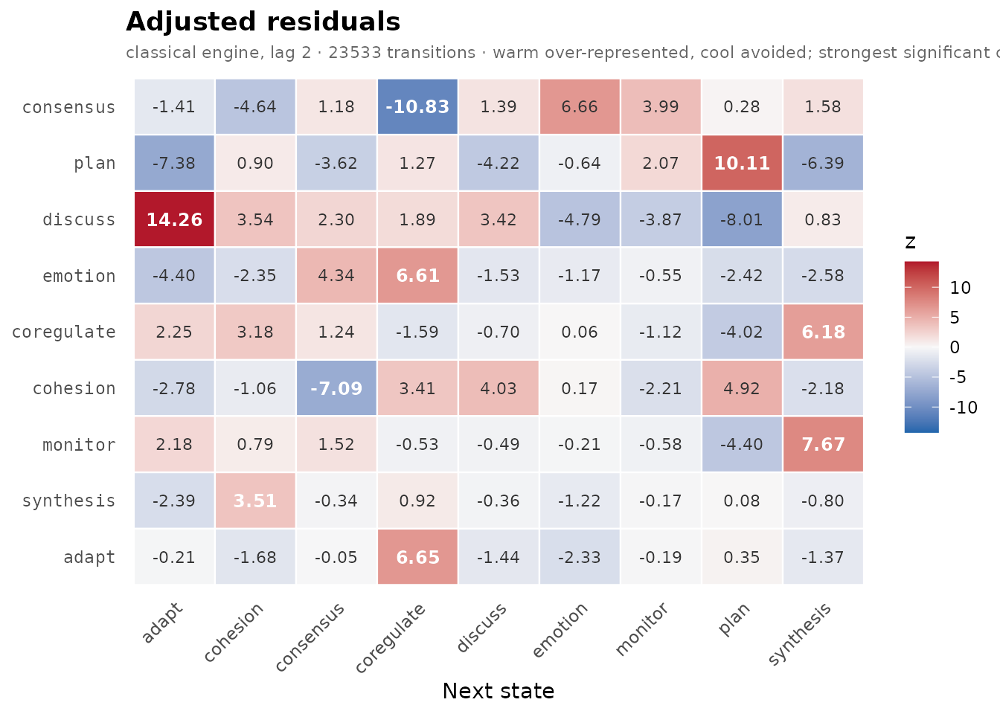

Lags and structural zeros
Written by Mohammed Saqr and Sonsoles López-Pernas
Source:vignettes/articles/lags-structural-zeros.Rmd
lags-structural-zeros.RmdA lag sequential model is defined by two choices that precede any test: the distance at which events are paired, and the set of transitions the model treats as possible. The lag fixes the pairing. At each event is paired with the next one; at with the one after that; at with the one before it. Comparing lags tells whether a sequential dependency is immediate and short-lived or persists over several steps (Bakeman & Quera, 2011). The set of possible transitions fixes the reference model. Some transitions cannot occur by construction, the standard case being a coding scheme in which a state cannot follow itself. Those cells are structural zeros: they are empty because they are impossible, not because they are avoided, and the independence model has to be fitted to the remaining cells only. Expected counts then come from the quasi-independence model fitted by iterative proportional fitting (Wickens, 1989), and residuals use the design-matrix form of Christensen (1997).
This guide covers both choices: single fits at a lag other than 1,
negative lags, lag profiles with lsa_lags() and
lag_profile(), and structural zeros declared with
loops = FALSE or an explicit structural_zeros
matrix. The basic model and its reading verbs are introduced in the LSA vignette; the other engines, which do not
support structural zeros, are described in the
engines guide.
Data
-
engagement: weekly engagement states (Active,Average,Disengaged) of 138 students over 15 weeks, one row per student. Two rows are entirely missing, so fits use 136 sequences. -
group_regulation: coded regulation actions in 2,000 collaborative learning sessions, one row per session and one column per ordered time point (T1toT26). Nine states:adapt,cohesion,consensus,coregulate,discuss,emotion,monitor,plan,synthesis.
Transitions are counted within a sequence only, at every lag: a pair never spans two students or two sessions.
A single fit at another lag
The lag argument of lsa() sets the distance
between the paired events. At lag 2 the model asks whether the state two
weeks later depends on the current one.
lsa(engagement, lag = 2)
#> Lag Sequential Analysis - classical (lag 2, directed)
#> 3 states | 1603 transitions | 1870 events | 136 sequences
#> states: Active, Average, Disengaged
#> independence: G² = 486.6, df = 4, p <2e-16
#>
#> Significant transitions (p < 0.05): 8 of 9
#> strongest over-represented (of 3):
#> Active -> Active z = +18.7 ***
#> Disengaged -> Disengaged z = +15.2 ***
#> Average -> Average z = +11.6 ***
#>
#> Initial states:
#> Active 0.382 ████████████████████████
#> Average 0.368 ███████████████████████
#> Disengaged 0.250 ████████████████The lag-2 table has 1,603 transitions against 1,734 at lag 1, because each sequence contributes one pair fewer. The dependency survives the extra week: eight of the nine cells depart from independence, and the three self-transitions remain the strongest over-represented cells (Active to Active, ). A student’s engagement two weeks ahead is still predicted by this week’s state.
Predecessors: negative lags
A negative lag pairs each event with an earlier one. At
lag = -1 the row from -> to counts how
often an event in from was preceded by
to, so the table answers the question “what came before
this state?”.
transitions(lsa(engagement, lag = -1))
#> from to lag count expected prob prob_col adj_res p yules_q
#> 1 Active Active -1 459 247 0.7051 0.698 21.663 4.60e-104 0.828
#> 2 Average Active -1 176 290 0.2307 0.267 -11.319 1.06e-29 -0.534
#> 3 Disengaged Active -1 23 121 0.0719 0.035 -12.557 3.64e-36 -0.826
#> 4 Active Average -1 153 282 0.2350 0.204 -12.906 4.16e-38 -0.601
#> 5 Average Average -1 458 330 0.6003 0.610 12.453 1.35e-35 0.553
#> 6 Disengaged Average -1 140 139 0.4375 0.186 0.176 8.60e-01 0.011
#> 7 Active Disengaged -1 39 122 0.0599 0.120 -10.549 5.11e-26 -0.698
#> 8 Average Disengaged -1 129 143 0.1691 0.397 -1.736 8.25e-02 -0.108
#> 9 Disengaged Disengaged -1 157 60 0.4906 0.483 15.390 1.90e-53 0.754
#> kappa kappa_z kappa_p lift sign significant
#> 1 0.4438 19.19 4.68e-82 1.858 over TRUE
#> 2 -0.4242 -12.48 9.39e-36 0.608 under TRUE
#> 3 -0.8272 -13.41 5.14e-41 0.189 under TRUE
#> 4 -0.4994 -14.70 6.81e-49 0.543 under TRUE
#> 5 0.2275 9.83 7.97e-23 1.386 over TRUE
#> 6 -0.0903 -1.66 9.79e-02 1.010 over FALSE
#> 7 -0.7069 -11.46 2.03e-30 0.320 under TRUE
#> 8 -0.1618 -2.96 3.03e-03 0.902 under FALSE
#> 9 0.3136 13.56 7.34e-42 2.618 over TRUEThe lag
table is the transpose of the lag 1 table. The row
Average -> Active counts 176 events in
Average preceded by Active, which are the same
176 pairs as Active -> Average at lag 1, with the same
adjusted residual
().
What changes is the conditioning of prob: at lag
it is the probability of the predecessor given the current state. Of all
events in Average, 23.1% were preceded by
Active; at lag 1 the same number appears as
prob_col, the share of Average events that
came from Active. Negative lags do not add new tests to a
single fit; they re-express the table from the target’s side, and they
make a lag profile read symmetrically around the present event.
Lag profiles
lsa_lags() fits the same model at several lags in one
call. Its print method reports how many transitions are significant at
each lag.
engagement_lags <- lsa_lags(engagement, lags = c(-2, -1, 1, 2, 3))
engagement_lags
#> <lsa_lags>
#> engine: classical
#> lags: -2, -1, 1, 2, 3
#> lag -2 8 of 9 transitions significant
#> lag -1 7 of 9 transitions significant
#> lag 1 7 of 9 transitions significant
#> lag 2 8 of 9 transitions significant
#> lag 3 8 of 9 transitions significantMost of the table departs from independence at every lag from to 3, so the engagement process has a long memory. The lag 0 fit is left out on purpose: at lag 0 each event is paired with itself, so the table is diagonal and every cell trivially departs from independence.
lag_profile() follows a single transition across lags as
a one-row-per-lag table.
lag_profile(engagement, from = "Active", to = "Active", lags = 1:5)
#> lag from to count prob adj_res p significant
#> 1 1 Active Active 459 0.698 21.7 4.60e-104 TRUE
#> 2 2 Active Active 409 0.664 18.7 5.20e-78 TRUE
#> 3 3 Active Active 359 0.631 16.0 7.53e-58 TRUE
#> 4 4 Active Active 333 0.650 16.3 6.66e-60 TRUE
#> 5 5 Active Active 290 0.618 13.9 6.31e-44 TRUEStaying Active remains strongly over-represented five
weeks ahead
(
at lag 5, against 21.7 at lag 1). The decline is gradual and not
strictly monotone (16.0 at lag 3, 16.3 at lag 4). Engagement in this
cohort is a durable state, not a week-to-week fluctuation.
The transitions() verb reads the multi-lag result with
the same filters as a single fit. The call below keeps the
over-represented transitions at lags 1 to 3, strongest first within each
lag.
transitions(lsa_lags(engagement, lags = 1:3), direction = "over",
sort = "strength")
#> from to lag count expected prob prob_col adj_res p yules_q
#> 1 Active Active 1 459 247.0 0.698 0.705 21.66 4.60e-104 0.828
#> 2 Disengaged Disengaged 1 157 60.0 0.483 0.491 15.39 1.90e-53 0.754
#> 3 Average Average 1 458 330.5 0.610 0.600 12.45 1.35e-35 0.553
#> 4 Active Active 2 409 232.5 0.664 0.676 18.70 5.20e-78 0.777
#> 5 Disengaged Disengaged 2 144 53.4 0.497 0.488 15.18 5.17e-52 0.767
#> 6 Average Average 2 420 305.7 0.603 0.597 11.61 3.73e-31 0.539
#> 7 Active Active 3 359 213.9 0.631 0.648 16.03 7.53e-58 0.723
#> 8 Disengaged Disengaged 3 98 48.7 0.363 0.368 8.63 6.25e-18 0.557
#> 9 Average Average 3 346 281.7 0.545 0.529 6.80 1.02e-11 0.347
#> 10 Average Disengaged 3 133 114.6 0.209 0.500 2.52 1.18e-02 0.169
#> kappa kappa_z kappa_p lift sign significant
#> 1 0.4438 19.188 4.68e-82 1.86 over TRUE
#> 2 0.3136 13.556 7.34e-42 2.62 over TRUE
#> 3 0.2275 9.835 7.97e-23 1.39 over TRUE
#> 4 0.3299 14.261 3.85e-46 1.76 over TRUE
#> 5 0.2683 11.597 4.25e-31 2.70 over TRUE
#> 6 0.1448 6.260 3.85e-10 1.37 over TRUE
#> 7 0.2159 9.334 1.02e-20 1.68 over TRUE
#> 8 0.1080 4.668 3.04e-06 2.01 over TRUE
#> 9 -0.0211 -0.702 4.83e-01 1.23 over TRUE
#> 10 -0.1358 -2.489 1.28e-02 1.16 over TRUEThe self-transitions are the only over-represented cells at lags 1
and 2. At lag 3 one more cell appears,
Average -> Disengaged
():
an average week raises the chance of a disengaged week three weeks
later, an effect that is absent at lag 1
(,
shown above in transposed form as Disengaged -> Average
at lag
).
Delayed effects of this kind are invisible to a lag 1 analysis.
The collaborative regulation data behave differently.
regulation_lags <- lsa_lags(group_regulation, lags = 1:3)
regulation_lags
#> <lsa_lags>
#> engine: classical
#> lags: 1, 2, 3
#> lag 1 72 of 81 transitions significant
#> lag 2 41 of 81 transitions significant
#> lag 3 10 of 81 transitions significant
lag_profile(regulation_lags, from = "emotion", to = "cohesion")
#> lag from to count prob adj_res p significant
#> 1 1 emotion cohesion 923 0.3253 58.20 0.0000 TRUE
#> 2 2 emotion cohesion 142 0.0547 -2.35 0.0189 TRUE
#> 3 3 emotion cohesion 138 0.0575 -1.58 0.1144 FALSE
lag_profile(regulation_lags, from = "plan", to = "consensus")
#> lag from to count prob adj_res p significant
#> 1 1 plan consensus 1788 0.290 8.53 1.51e-17 TRUE
#> 2 2 plan consensus 1316 0.232 -3.62 2.96e-04 TRUE
#> 3 3 plan consensus 1261 0.243 -1.14 2.56e-01 FALSEThe number of significant transitions falls from 72 of 81 at lag 1 to
41 at lag 2 and 10 at lag 3. The sequential structure of these sessions
is local: an action constrains the next action, much less the one after.
The emotion -> cohesion transition, the strongest of the
lag 1 table
(),
turns slightly under-represented at lag 2
()
and is indistinguishable from independence at lag 3.
plan -> consensus changes sign: over-represented at lag
1
(),
under-represented at lag 2
().
A lag 1 network of these data describes immediate responses, not longer
chains.
A residual heatmap of the lag 2 fit shows which dependencies remain once the immediate response is skipped.

Two actions apart, discuss -> adapt
()
and plan -> plan
()
are the strongest over-represented cells, and
consensus -> coregulate is the most avoided
().
The residuals are about a quarter of the size of the lag 1 residuals,
which reach 58.2.
Declaring structural zeros
Three cells of the group_regulation table are empty:
adapt -> adapt, adapt -> synthesis and
synthesis -> synthesis. Sorting the transitions by count
puts them in the last three rows.
regulation_fit <- lsa(group_regulation)
transitions(regulation_fit, sort = "count") |> tail(3)
#> from to lag count expected prob prob_col adj_res p yules_q kappa
#> 79 adapt adapt 1 0 10.6 0 0 -3.32 8.96e-04 -1 -1
#> 80 adapt synthesis 1 0 13.8 0 0 -3.80 1.46e-04 -1 -1
#> 81 synthesis synthesis 1 0 17.6 0 0 -4.31 1.63e-05 -1 -1
#> kappa_z kappa_p lift sign significant
#> 79 -3.41 6.56e-04 0 under TRUE
#> 80 -3.92 8.81e-05 0 under TRUE
#> 81 -4.51 6.40e-06 0 under TRUEUnder ordinary independence each empty cell is a significant avoidance ( from to ), because the margins predict between 10.6 and 17.6 transitions there. Whether that is a finding depends on the coding scheme. If these transitions are possible but never chosen, the residuals are the result. If the scheme makes them impossible, the residuals are an artefact, and the cells must be removed from the model rather than tested.
The structural_zeros argument takes a
matrix with 0 for a forbidden cell and 1 for an estimable one. Rows and
columns follow the state order that the fit reports
(nodes(regulation_fit) lists it; states are sorted
alphabetically). The matrix below is built from the names of the
forbidden transitions.
states <- c("adapt", "cohesion", "consensus", "coregulate", "discuss",
"emotion", "monitor", "plan", "synthesis")
forbidden <- c("adapt -> adapt", "adapt -> synthesis",
"synthesis -> synthesis")
allowed <- outer(states, states,
\(from, to) 1 * !(paste(from, "->", to) %in% forbidden))
allowed
#> [,1] [,2] [,3] [,4] [,5] [,6] [,7] [,8] [,9]
#> [1,] 0 1 1 1 1 1 1 1 0
#> [2,] 1 1 1 1 1 1 1 1 1
#> [3,] 1 1 1 1 1 1 1 1 1
#> [4,] 1 1 1 1 1 1 1 1 1
#> [5,] 1 1 1 1 1 1 1 1 1
#> [6,] 1 1 1 1 1 1 1 1 1
#> [7,] 1 1 1 1 1 1 1 1 1
#> [8,] 1 1 1 1 1 1 1 1 1
#> [9,] 1 1 1 1 1 1 1 1 0Fitting with the matrix switches the classical engine to the quasi-independence model.
constrained_fit <- lsa(group_regulation, structural_zeros = allowed)
constrained_fit
#> Lag Sequential Analysis - classical (lag 1, directed)
#> 9 states | 25533 transitions | 27533 events | 2000 sequences
#> states: adapt, cohesion, consensus, coregulate, discuss, emotion, monitor, plan, synthesis
#> independence: G² = 13116.4, df = 61, p <2e-16
#>
#> Significant transitions (p < 0.05): 69 of 81
#> strongest over-represented (of 23):
#> emotion -> cohesion z = +58.3 ***
#> discuss -> synthesis z = +46.6 ***
#> synthesis -> adapt z = +37.7 ***
#> consensus -> coregulate z = +35.4 ***
#> consensus -> plan z = +32.7 ***
#> ... and 18 more
#>
#> Initial states:
#> consensus 0.214 ████████████████████████
#> plan 0.204 ███████████████████████
#> discuss 0.175 ████████████████████
#> emotion 0.151 █████████████████
#> monitor 0.144 ████████████████
#> cohesion 0.060 ███████
#> synthesis 0.019 ██
#> coregulate 0.019 ██
#> adapt 0.011 █
tests(regulation_fit)
#> test statistic df p
#> 1 lrx2 13204 64 0
#> 2 x2 15435 64 0
tests(constrained_fit)
#> test statistic df p
#> 1 lrx2 13116 61 0
#> 2 x2 15189 61 0
transitions(constrained_fit, sort = "count") |> tail(3)
#> from to lag count expected prob prob_col adj_res p yules_q kappa kappa_z
#> 79 adapt adapt 1 0 0 0 0 NA NA -1 -1 -3.41
#> 80 adapt synthesis 1 0 0 0 0 NA NA -1 -1 -3.92
#> 81 synthesis synthesis 1 0 0 0 0 NA NA -1 -1 -4.51
#> kappa_p lift sign significant
#> 79 6.56e-04 NA expected FALSE
#> 80 8.81e-05 NA expected FALSE
#> 81 6.40e-06 NA expected FALSEThree things change. First, the forbidden cells have an expected
count of 0 and no residual, p-value or lift, so they are no longer
flagged: 69 of 81 transitions are significant instead of 72. Second, the
expected counts of the remaining cells are refitted so that the row and
column totals are still matched with the forbidden cells empty, which
moves the residuals of the other cells slightly
(emotion -> cohesion goes from 58.2 to 58.3). Third, the
tablewise test loses one degree of freedom per forbidden cell:
falls from 13,204 on 64 df to 13,116 on 61 df. The substantive
conclusions about the other 78 transitions do not change; the three
avoidance “findings” are gone.
The forbidden rows still show yules_q and
kappa values
(,
with kappa_p below 0.001). These columns are computed from
the observed counts of the full table and do not use the structural-zero
model, so on a forbidden cell they carry no information and are
ignored.
Forbidding self-transitions with loops = FALSE
The most common structural-zero pattern is the diagonal. When a
coding scheme merges consecutive identical codes, for example a dialogue
coded turn by turn where a new code starts only when the act changes, a
state can never follow itself. loops = FALSE declares the
whole diagonal forbidden without building a matrix. The model assumes
that these cells are empty in the data; when transitions do fall in a
forbidden cell, lsa() warns with the condition
lagdynamics_structural_zero_counts, because the margins
would then include transitions the model declares impossible. Every
state repeats in the bundled datasets (459
Active -> Active transitions in
engagement), so they are not candidates for this model; the
example uses a small count table of three dialogue acts with an empty
diagonal, which lsa() accepts directly.
turns <- matrix(c( 0, 34, 18,
27, 0, 41,
25, 30, 0),
nrow = 3, byrow = TRUE,
dimnames = list(c("Question", "Answer", "Feedback"),
c("Question", "Answer", "Feedback")))
turns
#> Question Answer Feedback
#> Question 0 34 18
#> Answer 27 0 41
#> Feedback 25 30 0Fitted under ordinary independence, the empty diagonal distorts the whole table.
transitions(lsa(turns))
#> from to lag count expected prob prob_col adj_res p yules_q kappa
#> 1 Question Question 1 0 15.5 0.000 0.000 -5.593 2.24e-08 -1.0000 -1.0000
#> 2 Answer Question 1 27 20.2 0.397 0.519 2.306 2.11e-02 0.3671 0.2247
#> 3 Feedback Question 1 25 16.3 0.455 0.481 3.085 2.04e-03 0.4833 0.2255
#> 4 Question Answer 1 34 19.0 0.654 0.531 5.146 2.66e-07 0.7083 0.4418
#> 5 Answer Answer 1 0 24.9 0.000 0.000 -8.008 1.17e-15 -1.0000 -1.0000
#> 6 Feedback Answer 1 30 20.1 0.545 0.469 3.342 8.31e-04 0.5044 0.2074
#> 7 Question Feedback 1 18 17.5 0.346 0.305 0.164 8.70e-01 0.0286 0.0247
#> 8 Answer Feedback 1 41 22.9 0.603 0.695 5.929 3.04e-09 0.7649 0.5080
#> 9 Feedback Feedback 1 0 18.5 0.000 0.000 -6.387 1.69e-10 -1.0000 -1.0000
#> kappa_z kappa_p lift sign significant
#> 1 -5.46 4.69e-08 0.00 under TRUE
#> 2 2.45 1.42e-02 1.34 over TRUE
#> 3 2.75 6.05e-03 1.53 over TRUE
#> 4 4.82 1.44e-06 1.79 over TRUE
#> 5 -8.17 3.00e-16 0.00 under TRUE
#> 6 2.48 1.32e-02 1.49 over TRUE
#> 7 0.30 7.64e-01 1.03 over FALSE
#> 8 6.07 1.26e-09 1.79 over TRUE
#> 9 -6.56 5.39e-11 0.00 under TRUE
tests(lsa(turns))
#> test statistic df p
#> 1 lrx2 149.0 4 3.30e-31
#> 2 x2 96.7 4 5.06e-20Eight of the nine cells are significant. The three empty diagonal cells are strongly “avoided” ( from to ), and to keep the margins, the model spreads part of every margin over the diagonal and the off-diagonal expected counts fall below the observed ones, so five of the six real transitions appear over-represented. The tablewise test rejects independence (, df = 4). All of this follows from the coding rule, not from the dialogue.
transitions(lsa(turns, loops = FALSE))
#> from to lag count expected prob prob_col adj_res p yules_q kappa
#> 1 Question Question 1 0 0 0.000 0.000 NA NA -1.0000 -1.0000
#> 2 Answer Question 1 27 31 0.397 0.519 -1.87 0.062 0.3671 0.2247
#> 3 Feedback Question 1 25 21 0.455 0.481 1.87 0.062 0.4833 0.2255
#> 4 Question Answer 1 34 30 0.654 0.531 1.87 0.062 0.7083 0.4418
#> 5 Answer Answer 1 0 0 0.000 0.000 NA NA -1.0000 -1.0000
#> 6 Feedback Answer 1 30 34 0.545 0.469 -1.87 0.062 0.5044 0.2074
#> 7 Question Feedback 1 18 22 0.346 0.305 -1.87 0.062 0.0286 0.0247
#> 8 Answer Feedback 1 41 37 0.603 0.695 1.87 0.062 0.7649 0.5080
#> 9 Feedback Feedback 1 0 0 0.000 0.000 NA NA -1.0000 -1.0000
#> kappa_z kappa_p lift sign significant
#> 1 -5.46 4.69e-08 NA expected FALSE
#> 2 2.45 1.42e-02 0.870 under FALSE
#> 3 2.75 6.05e-03 1.192 over FALSE
#> 4 4.82 1.44e-06 1.134 over FALSE
#> 5 -8.17 3.00e-16 NA expected FALSE
#> 6 2.48 1.32e-02 0.882 under FALSE
#> 7 0.30 7.64e-01 0.817 under FALSE
#> 8 6.07 1.26e-09 1.109 over FALSE
#> 9 -6.56 5.39e-11 NA expected FALSE
tests(lsa(turns, loops = FALSE))
#> test statistic df p
#> 1 lrx2 3.49 1 0.0616
#> 2 x2 3.48 1 0.0620Under quasi-independence the diagonal is excluded and no transition
is significant. With three states and a forbidden diagonal the model has
a single degree of freedom, which is why all six residuals have the same
size
(,
):
the one remaining question is whether the dialogue cycles in one
direction. The signs give the answer the data lean towards,
Question -> Answer -> Feedback -> Question more
often than the reverse, but the tablewise test
(,
df = 1,
)
does not support it at the 0.05 level. The independence fit reported a
strong sequential structure; the correct model finds none.
The expected counts of the quasi-independence model come from
iterative proportional fitting, available on its own as
lsa_ipf(). It takes a count matrix and a 0/1 structure
matrix of the same shape.
lsa_ipf(turns, structure = 1 - diag(3))
#> $fit
#> [,1] [,2] [,3]
#> [1,] 0 30 22
#> [2,] 31 0 37
#> [3,] 21 34 0
#>
#> $iterations
#> [1] 22
#>
#> $converged
#> [1] TRUE
#>
#> $max_margin_diff
#> [1] 4.37e-09The fitted table is the expected column of the
loops = FALSE fit (31, 21, 30, 34, 22 and 37 off the
diagonal, 0 on it): its row and column totals equal those of
turns and its diagonal is 0. The fit converged in 22
row-and-column passes. loops = FALSE and an explicit
structural_zeros matrix combine: with both, the diagonal of
the matrix is zeroed as well.
What changes with structural zeros
| Quantity | Independence | Quasi-independence (structural zeros) |
|---|---|---|
| Expected count | IPF fit with forbidden cells fixed at 0, margins matched | |
| Residual | Haberman adjusted residual | Christensen residual , from the hat matrix of the row and column design |
| Forbidden cell | tested like any other |
expected = 0; adj_res, p,
lift are NA; never significant |
| Degrees of freedom | estimable cells minus rank of the design; for forbidden cells in a non-degenerate pattern | |
yules_q, kappa
|
from observed counts | unchanged: still from observed counts, not part of the structural model |
The two residual formulas coincide when no cell is forbidden.
Structural zeros are supported by the classical engine only; the
two-cell, bidirectional and dominance engines stop with an error of
class lagdynamics_unsupported_option. Declare a structural
zero only when the coding scheme rules a transition out. An empty cell
that could have occurred is a result to report, not a cell to
remove.
References
Bakeman, R., & Quera, V. (2011). Sequential analysis and observational methods for the behavioral sciences. Cambridge University Press.
Christensen, R. (1997). Log-linear models and logistic regression (2nd ed.). Springer.
Wickens, T. D. (1989). Multiway contingency tables analysis for the social sciences. Lawrence Erlbaum.